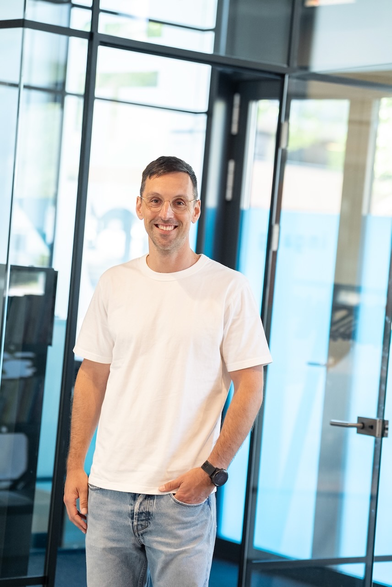

AI bij de overheid: verantwoord, uitlegbaar en binnen de kaders.
Van KCC tot beleidsafdeling wordt al met AI gewerkt. Ik help gemeenten, provincies en uitvoeringsorganisaties om dat verantwoord te doen: binnen de AVG en de AI Act, uitlegbaar naar burgers, en met grip op de eigen data.

Wat ik bij overheidsorganisaties tegenkom
Grote zorgvuldigheid op papier, veel onzichtbaar gebruik in de praktijk.
Onzichtbaar gebruik
Medewerkers vatten brieven van burgers samen in een gratis chatbot, omdat het werk anders niet af komt. Niemand weet het, dus niemand stuurt bij.
Beleid in de maak, al jaren
Er ligt een conceptnotitie, maar de praktijk wacht niet. Zonder werkbare afspraken blijft het bij goede bedoelingen.
Angst voor fouten
Terecht voorzichtig na incidenten met algoritmes. Maar AI volledig vermijden is ook een keuze, met eigen kosten voor burgers en medewerkers.
Waar het bij de overheid extra nauw luistert
Overheden werken voor iedereen en met gegevens die burgers niet vrijwillig delen. Dat schept een zwaardere verantwoordelijkheid.
- Persoonsgegevens van burgers. Van Woo-verzoeken tot zorgdossiers: bijna alles wat de overheid verwerkt is gevoelig.
- AI Act en algoritmeregister. Transparantie en uitlegbaarheid zijn geen extra's meer, maar verplichtingen.
- Besluitvorming. AI mag ondersteunen, maar een besluit over een burger blijft mensenwerk. Dat moet ook aantoonbaar zijn.
- Afhankelijkheid van buitenlandse leveranciers. Waar staat de data, wie heeft toegang, en wat als de voorwaarden veranderen? Europese alternatieven verdienen serieuze aandacht.
- Vertrouwen. Eén incident kost jaren aan vertrouwen. Zorgvuldigheid is hier geen rem, maar voorwaarde.

Zo help ik overheidsorganisaties verder
AI-training in-company
Training voor teams van KCC tot beleid: hoe AI werkt, wat je ermee kunt, en hoe je persoonsgegevens buiten de tool houdt. Met voorbeelden uit de eigen praktijk.
Bekijk de trainingLezing voor management of raad
Een lezing voor management of raad: waar staan we, wat verandert de AI Act, en welke keuzes liggen voor over tools, data en Europese opties.
Lees meerToolimplementatie en AI-beleid
Inzicht in het huidige AI-gebruik in de organisatie, een verantwoorde toolkeuze en werkafspraken die het beleidsproces voeden. Met BeeSensible voor blijvend overzicht.
Bekijk de aanpakWat je organisatie na een traject heeft
Medewerkers die het kunnen
Teams gebruiken AI met verstand: productief waar het kan, terughoudend waar het moet.
Uitlegbare afspraken
Duidelijk voor medewerkers, bestuur en burgers wat er wel en niet met AI gebeurt. Aantoonbaar voor audits.
Grip op data en leveranciers
Bewuste keuzes over waar data staat en van wie je afhankelijk bent, inclusief Europese alternatieven.
AI verantwoord inzetten in je organisatie?
In een gesprek van dertig minuten bespreken we waar jullie staan en wat een verantwoorde volgende stap is. Vrijblijvend.
Liever direct contact?
Bellen of mailen mag altijd. Ik reageer binnen één werkdag.
- E-mailinfo@matthijsvanmeurs.nl
- Telefoon+31 6 41 01 10 64
- LinkedInVolg of stuur een bericht